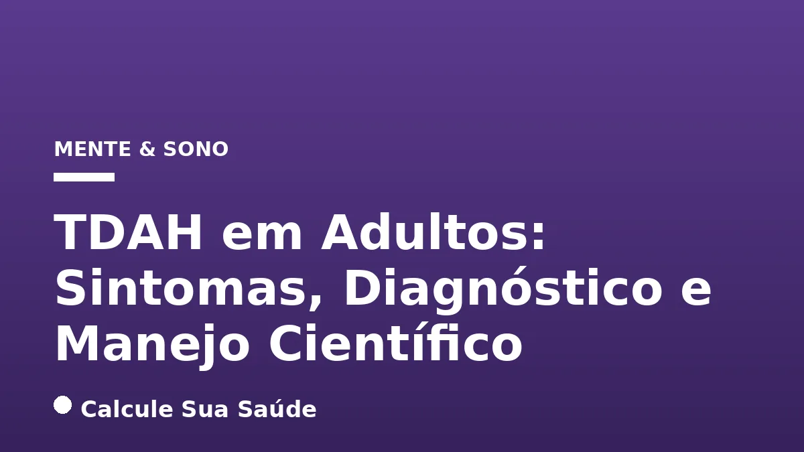
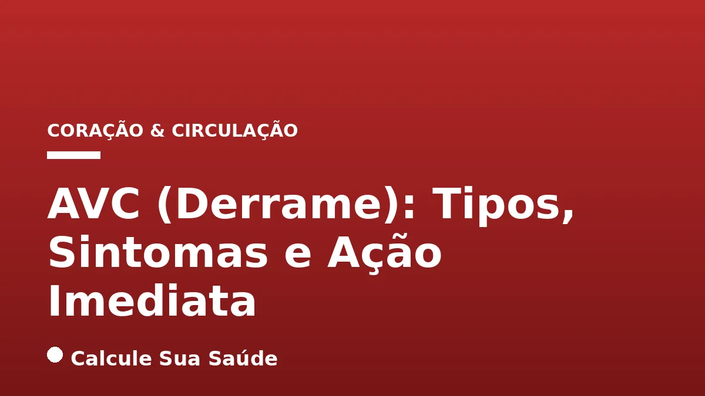
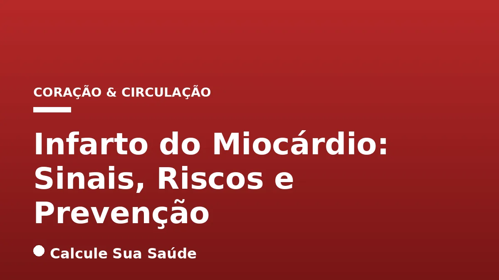
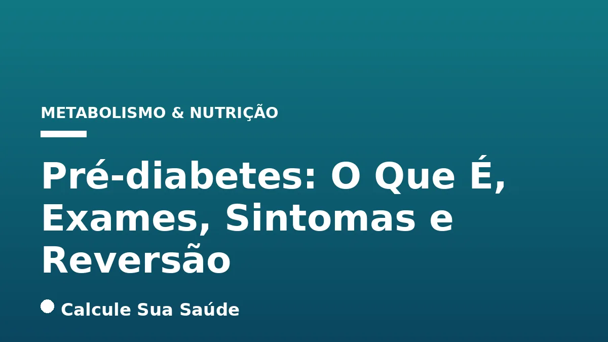
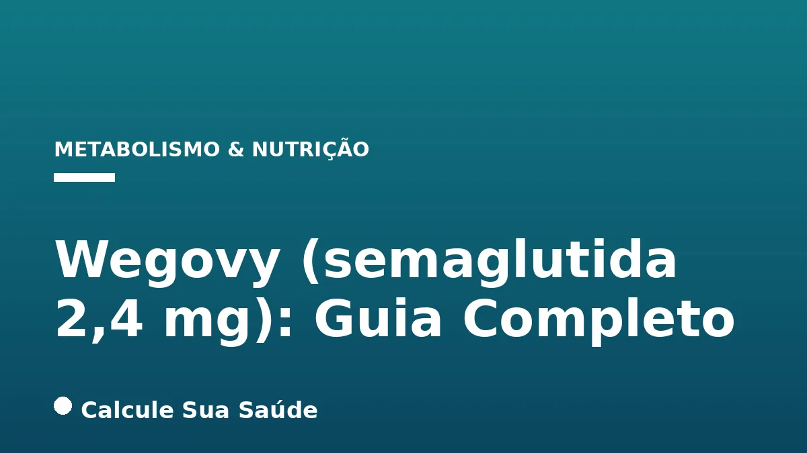

Todos os artigos
Insônia: Causas, Tipos e Tratamento Sem Remédios
A insônia é um distúrbio comum que afeta milhões, mas existem abordagens eficazes e não medicamentosas para restaurar a qualidade do sono.

TDAH em Adultos: Sintomas, Diagnóstico e Manejo Científico
O TDAH em adultos é um transtorno neurobiológico crônico que exige diagnóstico preciso e manejo multimodal para mitigar seus impactos na vida diária.

AVC (Derrame): Tipos, Sintomas e Ação Imediata
O AVC é uma emergência médica que exige reconhecimento rápido dos sintomas e ação imediata para salvar vidas e minimizar sequelas.

Infarto do Miocárdio: Sinais, Riscos e Prevenção
O infarto do miocárdio, ou ataque cardíaco, é uma emergência grave que exige reconhecimento rápido dos sinais e ações preventivas eficazes.
Enxaqueca: Gatilhos, Tipos, Crise e Tratamentos
Um guia aprofundado sobre enxaqueca, abordando seus gatilhos, classificações, manejo da crise e as mais recentes opções de tratamento.
Depressão: Sintomas, Causas, Tipos e Tratamentos
A depressão é uma condição clínica séria, não uma fraqueza, que exige compreensão e tratamentos baseados em evidências para recuperação.

Pré-diabetes: O Que É, Exames, Sintomas e Reversão
A pré-diabetes é um estágio intermediário reversível entre a glicemia normal e o diabetes tipo 2, exigindo atenção e mudança de hábitos.

Wegovy (semaglutida 2,4 mg): Guia Completo
Wegovy (semaglutida 2,4 mg) é um medicamento injetável semanal aprovado para o tratamento da obesidade e sobrepeso com comorbidades, oferecendo resul…

Mounjaro vs. Ozempic: Eficácia e Diferenças
Mounjaro (tirzepatida) e Ozempic (semaglutida) são medicamentos injetáveis semanais para diabetes tipo 2 e obesidade. Entenda suas diferenças.
Ozivy: A Primeira Caneta Emagrecedora Brasileira
A primeira semaglutida brasileira aprovada pela Anvisa: preço, eficácia real, riscos e o que muda no tratamento.
Orforglipron: A Pílula que Desafia as Canetas
A nova pílula GLP-1 da Eli Lilly que promete levar o efeito das canetas para um comprimido. Eficácia, riscos e status no Brasil.

Resistência à Insulina: Mecanismos
Uma revisão detalhada sobre a fisiopatologia da resistência insulínica e estratégias não-farmacológicas.

Macronutrientes: O Guia Bioquímico
Entendendo o metabolismo de proteínas, carboidratos e lipídios em nível celular.

Hipertensão: Diretrizes Atuais
Atualizações sobre diagnóstico, monitoramento e controle da pressão arterial sistêmica.

Cortisol e Estresse Crônico
Impactos neurobiológicos do estresse prolongado e marcadores hormonais de saúde mental.

Ritmo Circadiano e Saúde
Como a luz e os ciclos de sono afetam seu metabolismo, hormônios e sistema imunológico.

Mioquinas: O Segredo do Movimento
O papel do músculo esquelético como órgão endócrino e seus benefícios sistêmicos.

Vitamina D e Resposta Imune
O papel hormonal do calcitriol na modulação das células de defesa do organismo.

Microbiota Intestinal e Cérebro
O eixo intestino-cérebro: como as bactérias intestinais influenciam o humor e a ansiedade.

HIIT vs Aeróbico Contínuo
Comparação de eficácia na biogênese mitocondrial e na saúde cardiovascular.

O Efeito da Glicação na Pele
Como o excesso de açúcar degrada o colágeno e acelera o envelhecimento cutâneo.

Obesidade Infantil: Uma Pandemia
Dados da OMS sobre o crescimento da obesidade em menores e estratégias de intervenção.

Neuroplasticidade em Adultos
A capacidade do cérebro de se reorganizar e aprender novas habilidades na idade adulta.

Resistência a Antibióticos
O perigo global das superbactérias e o uso racional de medicamentos antimicrobianos.

Doença do Refluxo (DRGE)
Protocolos dietéticos e comportamentais para o manejo do refluxo gastroesofágico.

Prevenção da Osteoporose
A importância do cálcio, vitamina D e exercícios de impacto na saúde óssea.

Luz Azul e Saúde Ocular
Mitos e verdades sobre o impacto das telas digitais na retina e no sono.

SOP: Síndrome do Ovário Policístico
Diagnóstico, resistência insulínica e manejo multidisciplinar da SOP.

Testosterona e Envelhecimento
O declínio hormonal natural (DAEM) e quando a reposição é clinicamente indicada.

Hidratação e Pedras nos Rins
Fatores de risco dietéticos para litíase renal e estratégias de prevenção.

Doença Pulmonar Obstrutiva (DPOC)
O impacto do tabagismo e da poluição na função pulmonar a longo prazo.

Prevenção do Câncer: Estilo de Vida
Evidências sobre como dieta, álcool e exercícios influenciam o risco oncológico.

Mindfulness na Prática Clínica
Efeitos da atenção plena na redução de sintomas de ansiedade e dor crônica.

Creatina: Mito e Ciência
Segurança, dosagem e benefícios da creatina para além da hipertrofia muscular.

Longevidade e Zonas Azuis
O que podemos aprender com as populações que vivem mais de 100 anos.

Álcool e Danos Hepáticos
A progressão da esteatose para cirrose e os limites de consumo seguro.

Epigenética: Genes não são Destino
Como o ambiente e o estilo de vida podem ativar ou silenciar genes de doenças.

Síndrome do Túnel do Carpo
Ergonomia no trabalho e exercícios preventivos para lesões por esforço repetitivo.

Anemia Ferropriva: Sinais
Diagnóstico diferencial da falta de ferro e impacto na oxigenação e energia.

Rinite Alérgica vs Sinusite
Diferenças clínicas, gatilhos ambientais e opções de tratamento médico.

Vacinação em Adultos
O calendário vacinal além da infância: Herpes Zoster, Pneumonia e Hepatite B.

Polilaminina: O Que é e Benefícios
Revisão científica sobre a polilaminina: o que é a laminina, mecanismos de ação, benefícios estudados, segurança e como usar.
Colesterol e Triglicerídeos: Guia Completo
Entenda LDL, HDL, VLDL e triglicerídeos: valores de referência, aterosclerose e estratégias dietéticas e farmacológicas.
Jejum Intermitente: Ciência e Protocolos
Guia científico sobre 16:8, 5:2 e OMAD: autofagia, cetogênese, perda de peso e longevidade com base em evidências.
Hipotireoidismo: Guia Completo da Tireoide
Tudo sobre TSH alto, T4 livre, sintomas, Tireoidite de Hashimoto e tratamento com levotiroxina baseado em evidências.
Diabetes Tipo 2: Diagnóstico, Controle e Remissão
Guia completo: HbA1c, metformina, glifozinas, GLP-1 e estratégias de remissão baseadas em evidências.
Ansiedade: Transtornos, Neurobiologia e Tratamento
TAG, pânico, fobia social — neurobiologia do medo, TCC e medicamentos eficazes baseados em ciência.
Menopausa e Climatério: Guia Completo
Fogachos, TRH, riscos cardiovasculares e osteoporose — tudo sobre saúde da mulher na menopausa.
Ansiedade Sintomas: Guia Completo
Todos os sintomas de ansiedade: físicos, psicológicos, comportamentais e cognitivos. Crises vs. ataques de pânico.
Gordura no Fígado: Esteatose Hepática e MASLD
Guia científico sobre esteatose hepática: fisiopatologia, diagnóstico por elastografia, nova nomenclatura MASLD e tratamento.
Tente ajustar a categoria, remover termos de busca ou navegar pelas ferramentas.